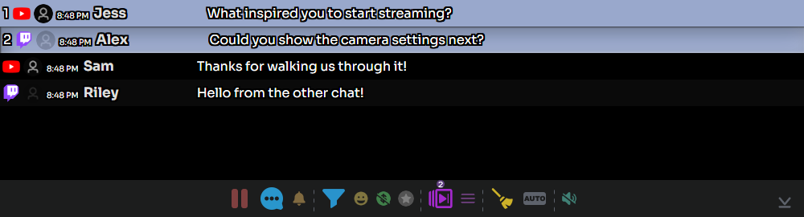

1. 운영자 도크 열기
먼저 SSN에 채팅이 들어오게 하세요. 확장 프로그램에서는 팝업을 열고 데스크톱 앱에서는 다음을 여세요: 소스 및 설정. 생성된 다음 링크를 여세요: 스트리밍 채팅 도크 링크를 여세요. 소스 채팅과 SSN을 계속 실행하세요.
생성된 다음 링크를 추가하세요: 강조 채팅 링크를 같은 세션과 비밀번호로 OBS 브라우저 소스에 추가하세요. 도크는 제어 창이며 강조 채팅은 시청자 화면입니다. 참고: OBS 빠른 시작 에서 아직 연결하지 않은 소스를 설정하세요.
- 캡처 플랫폼 채팅
- 운영 스트리밍 채팅 도크
- 표시 OBS의 강조 채팅
2. 메시지 강조 표시 및 지우기
- 도크에서 채팅 메시지를 클릭하세요. 연결된 강조 메시지 오버레이에 나타나야 합니다.
- 다른 메시지를 클릭하면 교체됩니다.
- 빗자루 버튼을 사용하세요: 강조 메시지 지우기(이 채팅 아님), 해당 메시지를 오버레이에서 제거합니다.
다음을 활성화했다면: 상황별 메뉴로 수동 선택 필요, 마우스 오른쪽 버튼을 클릭하고 다음을 사용하세요: 강조 표시 를 대신 사용하세요. 메시지를 표시하기 전에 각각 검토하려면 자동 강조 표시를 끄세요.


3. 다음 질문 준비
- 누를 키: Ctrl 키를 누른 채 메시지를 클릭하면 대기열에 추가됩니다. 또는 메시지를 마우스 오른쪽 버튼으로 클릭하고 다음을 선택하세요: 대기열 전환.
- 하단 도구 모음에서 대기열 개수를 확인하세요. 사용: 대기열의 메시지만 표시 로 선택한 메시지를 검토하세요.
- 사용: 대기열의 다음 메시지 강조 표시 로 다음으로 넘기세요. 원하지 않는 대기 메시지를 제거하려면 대기열 전환을 다시 사용하세요.
고정은 별도 기능입니다: Alt 키를 누른 채 클릭하거나 상황별 메뉴의 고정(Pin)을 사용하면 메시지가 도크의 고정 영역에 유지됩니다. 대기열은 강조 표시할 순서를 준비합니다.
4. 올바른 채팅에 답하기
시청자 메시지를 마우스 오른쪽 버튼으로 클릭하고 다음을 선택하세요: 답장. 받는 사람을 확인하고 답변을 입력한 다음 다음을 선택하세요: 보내기. 소스는 답장을 지원해야 하며 게시 권한이 있는 계정으로 로그인되어 있어야 합니다.
일반 말풍선 도구 모음 버튼은 메시지 전송 제어를 엽니다. 보내기 전에 대상을 확인하세요. 수신 캡처 성공이 발신 답장의 작동을 보장하지는 않습니다. 별도의 발신자 계정은 다음을 참조하세요: 답장용 봇 계정.
5. 활발한 채팅 관리
| 제어 | 용도 |
|---|---|
| 수신 채팅 일시 중지 / 재개 | 읽는 동안 도크 표시를 일시 중지하고, 재개하면 버퍼에 보관한 메시지를 처리합니다. 소스 캡처나 다른 오버레이는 멈추지 않습니다. |
| 필터 | 관련 메시지를 찾으세요. 전체 보기로 돌아가려면 필터를 지우세요. |
| 후원 / 회원 필터 | 표시되는 채팅 범위를 일시적으로 좁힙니다. 일반 메시지가 빠진 것 같으면 이 필터들을 끄세요. |
| 실시간으로 돌아가기 / 맨 아래로 스크롤 | 이전 채팅을 읽은 뒤 최근 메시지로 돌아갑니다. |
유지: 필터링된 메시지를 자동 선택에서 제외 를 필터와 자동 강조 표시를 함께 사용할 때 활성화하세요. 보기 필터만으로는 채팅 관리 정책이 되지 않습니다. 참고: 채팅 관리 및 필터링.
생방송 전
사용: 테스트 메시지, 메시지 하나를 강조 표시하고 두 개를 대기열에 넣은 뒤 한 번 다음으로 넘기고 오버레이를 지워 보세요. 도크는 작동하지만 OBS가 비어 있으면 저장된 OBS URL, 세션/비밀번호, 강조 메시지 브라우저 소스의 로드 여부를 확인하세요. 참고: OBS 문제 해결.